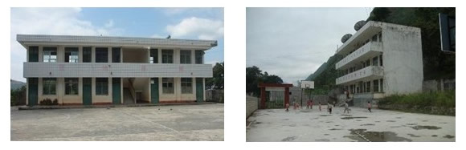
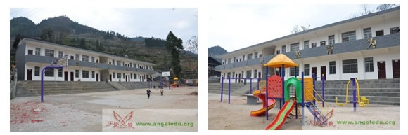

农村孩子的真实需要 - 偏远地区乡村学校师资现状
前面我们讨论过农村孩子最需要有一个值得信任的权威，来帮助他们建立属于自己的归属。而当大部分农村孩子因为父母外出，在成为留守儿童时，这个权威就是长期在他们身边的乡村教师。
当前农村的乡村教师是什么情况呢？下面将进一步分享我们所了解偏远地区农村学校，尤其是村小（教学点）乡村教师的现状。
偏远地区农村学校、村小(教学点)教师现状
捐建校舍、捐建图书室、配套爱心食堂、解决免费午餐、捐赠校车等各种项目。甚至有个别地区的农村学校在政府财政支持下，已经完全做到学生从入校开始的学习、吃、住不用交一分钱。
但是我们现在却忽视着对农村孩子们成长中最至关重要的一个环节，那就是偏远地区乡村教师的紧缺和流失……
案例一：

这是广西两所设施完好的村小，近两年因为乡村教师的不断流失造成空置。本地学生不得不被迫“撤点并校”转到乡中心小学就读。
案例二：

湖南湘西傍海村小学（2012年时任湖南省长结对村）。2012年初，全校四个年级加学前班80多名学生，只剩一个本地代课老师维持。
最终由梦创公益从2012年初开始，每学期选派三名以上志愿者为傍海村小学进行接力支教，才使得学校能够正常开展教学工作。
案例三：
湖南省湘西古丈县双溪乡中心完小，2012年5月，时任总理温家宝亲自到访调研。
温总理走后，不断有大量的社会捐赠进校，学校进行了全新规划，其中部分建设项目已完工
还是同样一个问题，尽管有如此高层的领导关注，众多企业地捐助。但是学校却因为没有专业英语老师，以至于2012年秋季学期，开学前两个月的时间全校停开英语课。最后在梦创公益选派一名英语专业志愿者到岗支教后，这才让全校有了正式的英语课程。
近年来，每学期开学前梦创公益都会收到大量，来自全国各地偏远地区农村学校的求援电话或邮件。都是迫切希望我们能派出乡村支教志愿者去支持他们学校服务。
如果你真的想帮助农村孩子,欢迎参与自然之手支教项目 欢迎参加
返回主页